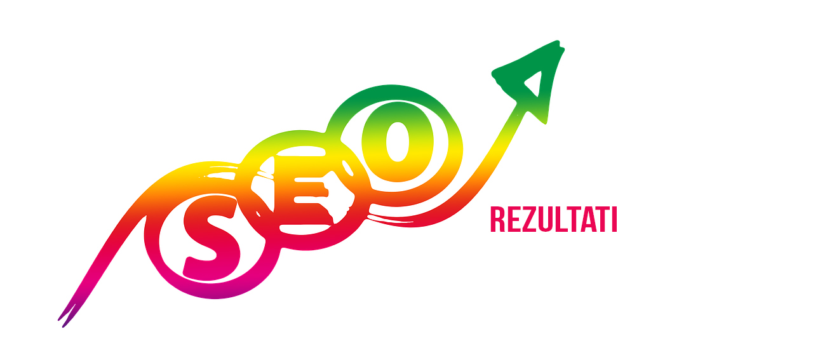

Kako instalirati AMP plugin za Wordpress?
Kako instalirati AMP plugin za Wordpress i ubrzati sajt
Kako ubrzati wordpress sajt
U prošlom tekstu govorili smo zašto je bitno da sajt bude dobro optimizovan i od kolikog je to značaja za posećenost i prodaju, a sada ćemo vam sve to i demonstrirati.
Rekli smo da je instaliranje AMP dodatka relativno lak postupak. Sve što je potrebno da uradite je da instalirate WordPress AMP dodatak koji je razvila kompanija Automattic, a nastavak procesa je uobičajen.
- dite na WordPress Dashboard > Plugins (Dodaci) > Add New (Dodaj novi).
- Ukucajte “AMP” u Search.
- Izaberite AMP dodatak i kliknite na Install Now.
Nakon aktivacije dodatka, svi URL-ovi objava na vašem vebsajtu će imati AMP verziju. Svakako, možete otići na link bilo koje objave, dopisati /amp/ nakraju URL-a kako biste videli AMP verziju.
Međutim, ako nemate uključene permalinkove (Pretty Permalinks), do AMP vezije možete doći dodavanjem ?amp=1 na link objave. Na primer, ovako bi trebalo da izgleda link objave:
-
Normalna verzija: http://example.com/2016/01/01/hello-mobile-web/
- AMP verzija: http://example.com/2016/01/01/hello-mobile-web/amp/
- AMP verzija sa isključenim Pretty Permalinks: http://example.com/2016/01/01/hello-mobile-web/?amp=1
AMP dodaje standardan meta tag u zaglavlje vaših “normalnih” HTML veb stranica što omogućava Guglu i drugim pretraživačima da prepozna AMP verzije stranica. On koristi logo veb sajta koji možete instalirati u WordPress Theme Customizer. Važno je napomenuti da ovaj dodatak podržava samo konverziju objava u AMP verzije. Podrška za AMP verziju WordPress stranica se još razvija i trebalo bi da se pojavi uskoro.
Koliko AMP dodatak ubrzava sajt? Dovoljno da ga odmah instalirate!
Testirali smo AMP dodatak za ubrzanje sajtova na jednoj stranici, koristeći Pingdom, platformu za testiranje brzine sajtova. Napomena: sajt koji smo koristili za testiranje nalazi se na deljenom hosting, sa osnovnom Twenty Fourteen temom, bez ikakvih dodataka za keširanje ili optimizaciju.
Skrinšotovi pred vama prikazuju perfomanse stranice, pre i posle instaliranja AMP dodatka za ubrzanje WordPress sajta.
Dakle, ovo je brzina otvaranja stranice pre instaliranja dodatka:
A ovo je brzina otvaranja stranice nakon instaliranja dodatka:
Kao što se može videti, postigli smo značajno ubrzanje stranice, čak za 4 sekunde, i ne samo to, došlo je do drastičnog poboljšanja svake komponente:
- Veličina stranice je smanjena za 70%;
- Vreme učitavanja je smanjeno za 65% i iznosilo je 2.11 sekundi;
- Broj zahteva je smanjen za skoro 80% sa 116 na samo 26.
Sve ovo je postignuto uz AMP, sa istim sadržajem na veb sajtu, bez dodatnih intervencija! Ako još jednom proučimo ove rezultate, evidentno je da treba instalirati AMP dodatak za optimizovanje bez razmišljanja. Ne samo da će vam poboljšati SEO rezultate, već će vam pružiti lepo i lagodno korisničko iskustvo.
AMP Accelereted Mobile Pages ima čitav niz korisnih opcija – evo nekih!

Poput Yoasta i Jetpacka i ostalih popularnih dodataka koji imaju niz korisnih opcija pored osnovne funkcije, to je slučaj i sa AMP Acclelereted Mobile Pages dodatkom.
- Integracija Gugl Analitike;
- Podrška za AMP WooCommerce veb stranice;
- Povezane objave (Related Posts), što direktno utiče na rast posete;
- Lista nedavnih komentara (Recent Comments);
- Postavljanje unikatnog logotipa;
- Opcija za deljenje objava na društvenim mrežama;
- Podrška za embedovanje sa platformi kao što su YouTube, Instagram, Twitter, Vine... (ovo je jako bitno ako imate blog na primer, jer neke WP teme odbijaju embed sa manje poznatih platformi).
Evo detaljnog uputstva kako ga instalirati – gotovo identično kao AMP dodatak s početka teksta:
https://www.youtube.com/watch?v=zzRy6Q_VGGc
Ako vas zanimaju sve opcije koje ovaj dodatak nudi, možete ih proučiti na oficijalnoj stranici, mi smo isprobali – i vrlo smo zadovoljni – uključivanje komentara, dodavanje povezanih objava i dodavanje navigacije ka sledećoj/prethodnoj objavi (i ovo poput povezanih objava direktno utiče na posetu).
A ako za SEO optimizaciju koristite Yoast SEO plugin, onda je ovaj tekst obavezno štivo za vas, jer otkriva jedan maleni plagun koji su nazvali Glue for Yoast SEO and AMP, koji „merdžuje“ ova dva plagina.
Rezime: Zašto (ne) treba instalirati ovaj plagin?
Imajući u vidu ubrzano povećanje broja korisnika mobilnih uređaja u proteklih nekoliko godina, optimizacija za mobilne telefone više ne predstavlja samo još jednu u nizu opcija za onlajn kompanije, već je to danas postalo apsolutno neophodno. AMP (Ubrzane mobilne strane) projekat predstavlja ambiciozan napor ka tom cilju, a sve veći broj medijskih kuća se ubrzano prilagođavaju na njega. Da li znate da se procenat poseta na prosečnom news portalu s mobilnog uređaja kreće oko 70%?
Iako je novijim blogovima lakše da uključe AMP, za blogove sa hiljadama stranica sadržaja to može predstavljati ozbiljan izazov, a razlog za to je prost - ne prate svi odgovarajuće standarde prilikom objavljivanja, a organizacije evoluiraju. Čak i veb tehnologije koje su pre pet godina bile veoma popularne se danas smatraju zastarelim. Iako se AMP trudi da se razvija na trenutno najboljim veb tehnologijama, dešavaće se slučajevi kada će doći do određenih grešaka/nekompatibilnosti, a te greške mogu imati ozbiljan uticaj na vaše SEO rezultate.
Idealno, kompanije bi trebalo da izmere izvore poseta ka svom veb sajtu i da utvrde koji procenat poseta dolazi sa mobilnih uređaja. Koliko ljudi je posetilo njihov veb sajt koristeći mobilne pretraživače? Kolika je stopa posete samo jedne stranice (Bounce rate) kod posetilaca koji koriste mobilne telefone? Ovo su neka od najbitnijih pitanja koje treba uzeti u obzir pre nego što se opredelite za AMP.
Ako ste čvrsto uvereni da je sadržaj na vašem veb sajtu tehnički organizovan prema najnovijim standardima, onda je naša preporuka da izaberete AMP dodatak i počnete da ga koristite. To će vam umnogome pomoći da poboljšate vaš SEO.
Međutim, ako ste svesni da na vašem veb sajtu ima veliki broj internih pogrešnih konfiguracija, loših linkova i grešaka, onda bi najbolje bilo da se posvetite tim problemima i rešite ih pre nego što dalje nastavite sa AMP-om.
I ne zaboravite savet iz prethodnog teksta – naporedo sa svim ovim, podjednako treba da vam bude važan kvalitet sadržaja, jer ni tehnički perfektan, vizuelno impresivan i maksimalno optimizovan sajt neće zadržati posetioca ukoliko ne poseduje kvalitet.
Ukoliko vam je ovaj tekst bio koristan, sigurno će biti i vašim prijateljima pa vas molimo da ga podelite na vašoj društvenoj mreži. Hvala!
SEO smernice za 2019 godinu
Pročitajte na šta treba da obratite pažnju u 2019 godini....
Detaljnije...

Linkbuilding Tutorijal za 2019
Zašto su backlinkovi i dalje najvažniji za optimizaciju sajta...
Detaljnije...

Kad dolaze SEO rezultati?
Kada SEO počinje da generiše veću prodaju, kad dolazi rangiranje...
Detaljnije...